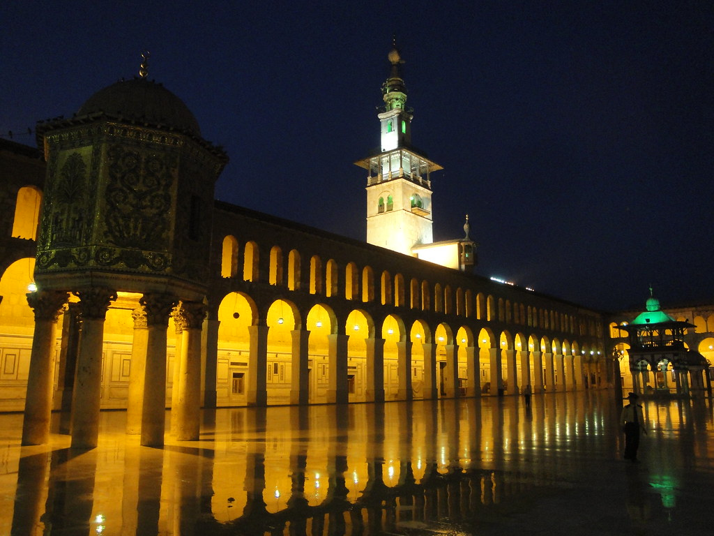
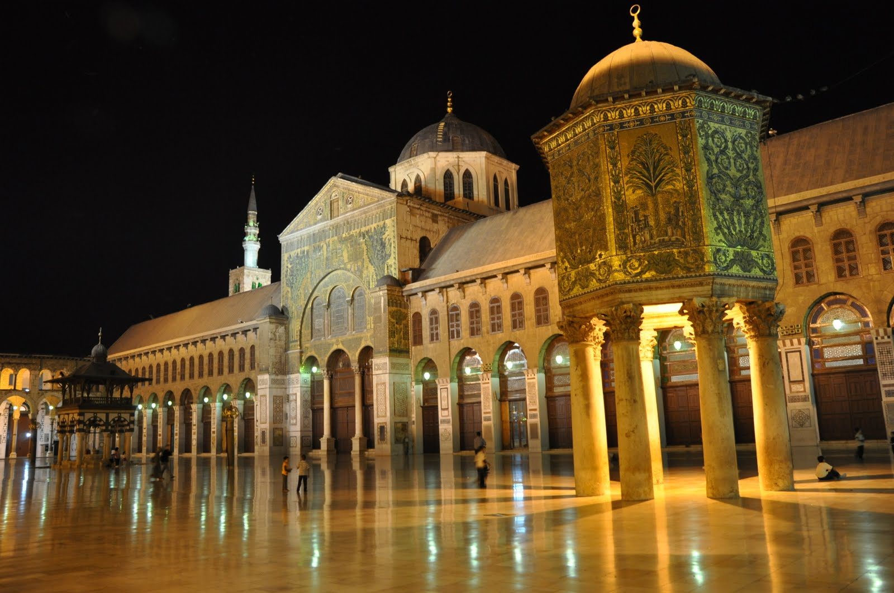
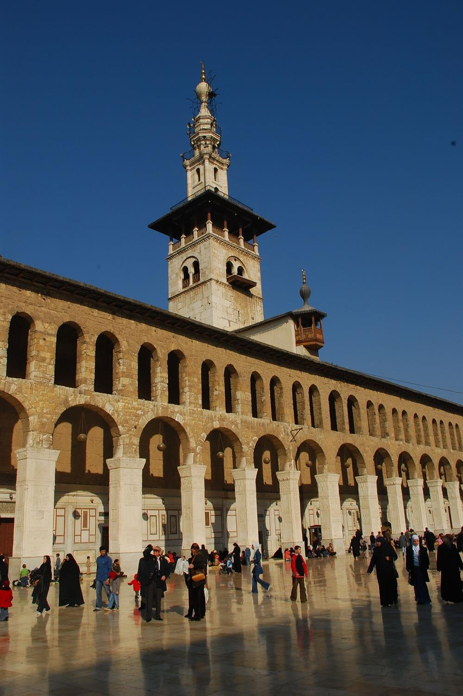

Emevi Camii, Şam Ulu Cami olarak da bilinen yapı, Şam'ın eski şehir kısmında yer alır ve dünyanın en büyük ve en eski camilerinden birdir.
634 yılında, Şam'ın Araplar tarafından alınmasından sonra, Roma İmparatoru I. Konstantin zamanından beri Vaftizci Yahya'ya adanmış Hristiyan bazilika, Ebu Ubeyde bin Cerrah'ın gözetimi altında 635 yılında yapıya eklemelerle camiye çevrilmiştir.
Yetmiş yıl boyunca aynı yapı hem kilise hem de cami olarak iki dinin ibadethanesi olmuş; Müslüman nüfusun zaman içinde artması sonucu tamamı camiye çevrilmiştir.
Cami, bugün hala korunan Vaftizci Yahya kafası gibi kutsal emanetleri muhafaza eder. Ayrıca cami içerisinde Şiilik için önemli nirengi noktaları vardır.
Bunlar arasında I. Yezid tarafından gösterilmek üzere saklanılan Muhammed'in torunu Hüseyin'in kafası yer almaktadır.
Caminin kuzey duvarına eklenmiş küçük bir bahçede Selahaddin Eyyubi'nin türbesi bulunmaktadır.
Orijinal planıyla günümüze kadar gelebilmiş olan Şam Emeviye, enine gelişme gösteren, mihrap önü kubbeli plan tipine sahiptir.
Yapımından sonra kurulan tüm İslam devletlerinde cami mimarisine model olmuş ilk yapıdır.
Cami mimarisine birçok yenilik katmış, hatta çok sonra Anadolu camilerini plan yönünden etkilemiştir.
Caminin bitkisel ve geometrik motiflerle şehir ve bina tasvirlerinden meydana gelen fevkalâde zengin mozaik süslemeleri de sanat tarihi bakımından büyük bir önem taşır.
Caminin bir diğer özelliği de İslâm alemindeki ilk umumi helâların burada yapılmış olmasıdır.


